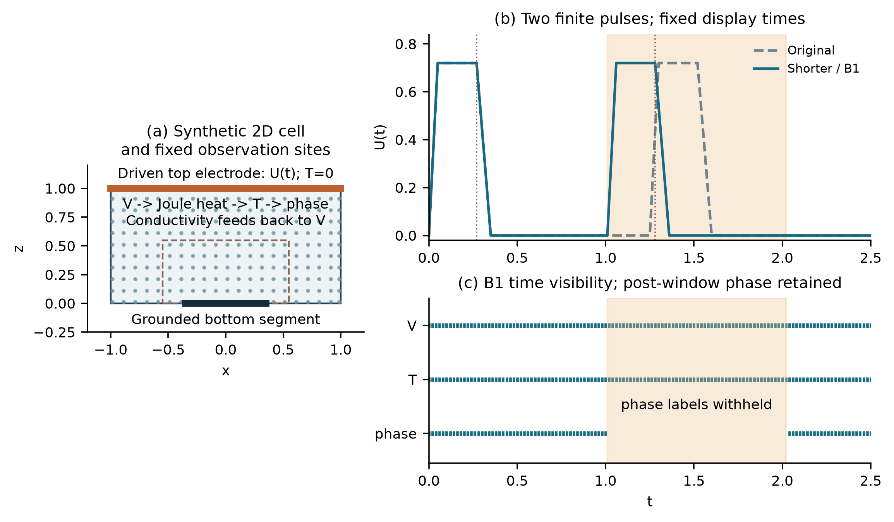
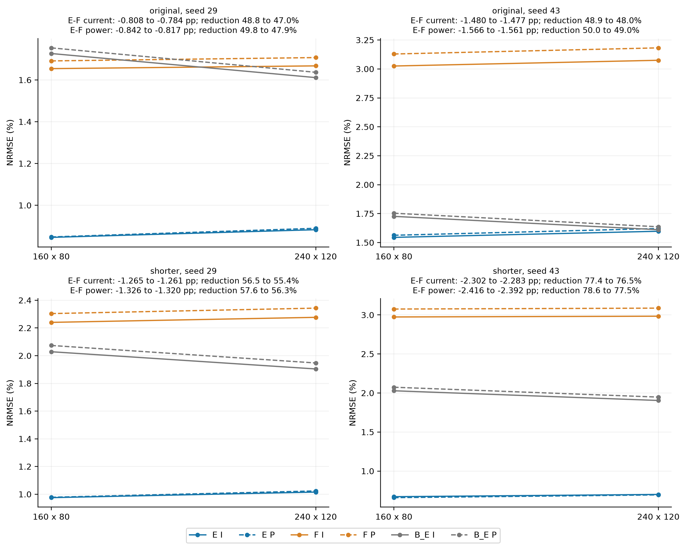
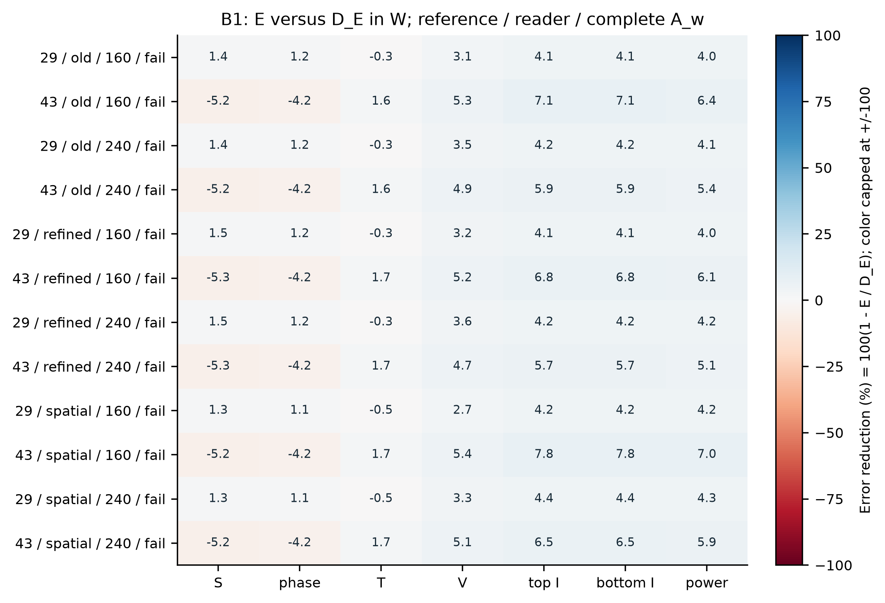
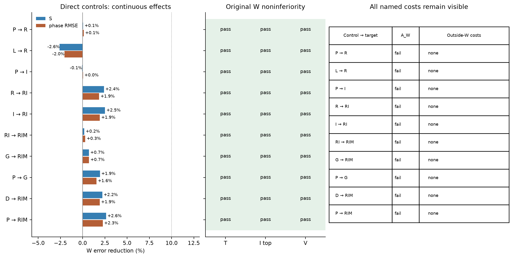

Training Time Electrical Elimination in Physics Informed Electrothermal Phase Reconstruction
Terminal electrical consistency can be restored after training without correcting the temperature and phase fields that produced the conductivity. We tested whether solving the quasi-static electrical subproblem during training improves a physics-informed reconstruction after every comparator receives the same final electrical solve. The model retains neural temperature and phase, solves a grounded finite-volume electrical system, and deposits Joule heat with the same face resistances used by that solve. Four full-label E/F pairs from two finite-pulse protocols retained the device-error criterion under three numerical references and two electrical readers. With the spatially refined reference and fine reader, current and power errors fell by 47.03-76.52% and 47.86-77.50% relative to the repaired soft-PINN controls. The interpretation is narrower than this result alone suggests. A strong interpolation baseline produced a continuous-ranking counterexample, and matched controls without the interior thermal and phase residuals had lower phase and device errors in both full-label tests. When phase labels were removed throughout the second pulse, E failed to improve over this control in all 12 reference-reader checks; outside-window costs appeared in 6 of 12 checks. A further eight-arm screen of relative phase residuals and local temporal moments yielded only 1.92-2.63% improvement for its full candidate and did not reach the predeclared 10% phase criterion. These results support the tested electrical-constraint configuration relative to the soft comparator, but they do not establish an independent contribution from the remaining dynamic residuals. The study is a synthetic, known-model offline reconstruction benchmark. Strict event accuracy, discretization convergence and material validation remain open.
Keywords physics informed neural network; electrothermal coupling; electrical elimination; phase reconstruction; matched controls
In an electrothermal phase-transition model, a small potential error can distort contact current and local Joule heating. A final electrical solve fixes Kirchhoff balance for the predicted conductivity, but it does not repair the temperature and phase fields that generated that conductivity. This distinction matters when terminal current is used to judge a reconstructed state.
We study a two-dimensional offline reconstruction problem with known geometry, coefficients, drive, initial conditions and boundary conditions. The network receives sparse field samples and explicit physical residuals. The main comparison asks whether the electrical equation should be solved inside training rather than penalized through a neural potential. Every method is evaluated after the same electrical projection, so the comparison cannot be explained by post-processing alone.
The experiments also separate this electrical question from the value of the remaining thermal and phase residuals. The soft PINN F trains all three fields. The eliminated model E keeps neural temperature and phase but solves potential at every electrical query. DE keeps the eliminated electrical feedback while removing the interior thermal and phase terms. BE is a strong same-solver interpolant built from the visible states. These controls expose two different findings: E improves over F after common repair, whereas the added dynamic residual package does not improve over DE in the tested full-label or phase-gap conditions.
The contribution is therefore an evaluated coupling interface, not a general claim that hard constraints make PINNs superior. Differentiable solvers, constrained layers and hybrid numerical-neural models provide the broader context [3-5,15,16]. The present work applies that idea to a coupled electric-thermal-phase reconstruction and tests it against controls that share the final electrical solver.
The computational cell is Ω = [-1,1] × [0,1] over 0 ≤ t ≤ 2.5. Potential V, reduced temperature T and phase fraction φ satisfy a quasi-static conduction equation, a thermal balance with latent heat and Joule deposition, and a nonconserved phase equation:


Conductivity depends on both T and φ. The top electrode receives a prescribed pulse, a centered bottom segment is grounded, and the remaining electrical boundaries are insulating. The thermal top boundary is fixed, the other thermal faces use a Robin condition, and phase uses no-flux boundaries. The coefficients and initial phase profile define a dimensionless synthetic benchmark; they are not fitted oxide parameters.
We use two related two-pulse protocols. The original second pulse starts at t = 1.25; the shorter protocol moves it to t = 1.01 without changing pulse shape. Each protocol has 28,875 positive-time observation locations and 86,625 noiseless scalar labels for V, T and φ. These samples cover 1.8047% of the 3,200 × 500 carrier positions. Each protocol is fitted separately. The study is neither zero-shot transfer nor a sensor-minimization experiment.

Figure 1 Geometry, fixed spatial sampling and the two finite-pulse histories. In the phase-gap test, only φ labels in W = [1.01,2.02] are removed; V and T remain observed.
The network has independent smooth heads for T and φ, with width 64 and four hidden layers. Their output maps impose the initial state and temperature range. At each electrical query, the eliminated model evaluates conductivity from the current neural state and solves

The finite-volume matrix uses half-cell face resistances and the actual electrode overlap. The same resistances define face currents and cellwise Joule deposition. Gradients pass through the solve by an adjoint linear system, including the dependence of electrode conductance and heating on conductivity [5]. This is a discrete constrained layer; it is not presented as an exact continuum solution or a new differentiation theorem.
F trains a neural potential and penalizes the discrete electrical imbalance. E replaces this potential with the solved field. Both retain the same observation, boundary, initial, thermal and phase terms, and both receive the same final electrical projection for scoring. DE retains the eliminated electrical solve and its feedback but omits the interior thermal and phase residuals. BE interpolates the visible T and φ samples and then applies the same electrical solve.
Each clean pair starts from a separately fitted common parent. Branches use 1,500 Adam updates and at most 300 complete L-BFGS evaluations. All line-search closures count, and an interrupted search restores the last accepted state. Two initialization values, 29 and 43, are used for each protocol. Three numerical references and two prediction-side electrical readers test sensitivity; these six readings do not create six independent trainings.
The phase-gap experiment removes φ labels throughout the second cycle while keeping V, T and post-window φ visible. It rebuilds two observation-only parents and compares E with DE under the original phase criterion Aw. Aw requires at least 10% improvement in both phase RMS and active-set error, together with 5% noninferiority guards for temperature, current and potential. Whole-history errors, outside-window costs and strict event quality are reported separately.
A later one-initialization screen tests whether the phase residual is weakened near pure states. Eight branches compare the original residual, complete and clipped-logit coordinates, zeroth- and first-order interval moments, and a fixed gradient-matched scalar control. Each branch uses 600 Adam updates and 100 complete L-BFGS evaluations. This screen is developmental; it can reject the proposed mechanism under the frozen budget but cannot establish stability from one initialization.
All four E/F pairs retain the complete device criterion under every tested reference and reader. Under the spatial reference with the fine reader, E reduces current NRMSE by 47.03-76.52% and power NRMSE by 47.86-77.50% relative to repaired F. The effect survives common post-training projection.
Table 1 Full-label errors under the spatial reference and fine reader
| Protocol | Seed | Method | Phase RMS | Current % | Power % |
|---|---|---|---|---|---|
| Original | 29 | E | 0.02106 | 0.883 | 0.890 |
| Original | 29 | F projected | 0.02475 | 1.667 | 1.707 |
| Original | 43 | E | 0.02246 | 1.598 | 1.622 |
| Original | 43 | F projected | 0.02516 | 3.075 | 3.182 |
| Shorter | 29 | E | 0.01994 | 1.016 | 1.024 |
| Shorter | 29 | F projected | 0.02445 | 2.277 | 2.343 |
| Shorter | 29 | DE | 0.01947 | 0.958 | 0.965 |
| Shorter | 43 | E | 0.01976 | 0.700 | 0.695 |
| Shorter | 43 | F projected | 0.02410 | 2.984 | 3.087 |
| Shorter | 43 | DE | 0.01971 | 0.643 | 0.625 |

Figure 2 Full-label device errors for the four E/F pairs under the common readers. BE is shared within each protocol and is repeated only to display the paired comparisons.
The same evidence limits the claim. DE has lower phase, current and power errors than E for both shorter-protocol seeds. Under the spatial reference and fine reader, E exceeds DE by 2.40%, 6.00% and 6.06% for seed 29, and by 0.28%, 8.95% and 11.24% for seed 43. A strong interpolant also reverses the continuous device ranking for original-protocol seed 43 under the original and time-refined references. Electrical elimination therefore improves the tested E/F configuration, but the experiment does not isolate an independent benefit from the additional dynamic residuals.
Neither initialization passes Aw against DE under any reference-reader combination. Seed 29 shows small favorable changes, with phase RMS reductions of 1.10-1.23% and active-set reductions of 1.30-1.46%. Seed 43 moves in the opposite direction: phase RMS increases by 4.18-4.23% and active-set error by 5.21-5.25%. All temperature, current and potential guards pass, so the result is determined by the missing phase gain rather than a relaxed guard.
Table 2 Phase-gap errors in W under the spatial reference and fine reader
| Seed | Method | 1000 S | Phase RMS | Temperature % | Current % | Power % |
|---|---|---|---|---|---|---|
| 29 | E | 8.924 | 0.10241 | 1.140 | 1.105 | 1.120 |
| 29 | DE | 9.042 | 0.10355 | 1.135 | 1.156 | 1.171 |
| 43 | E | 8.008 | 0.09063 | 1.107 | 0.931 | 0.950 |
| 43 | DE | 7.612 | 0.08699 | 1.127 | 0.996 | 1.010 |

Figure 3 E relative to same-parent DE in all 12 phase-gap sensitivity checks. Positive values mean smaller E error. The rows represent two trained initializations, not 12 independent experiments.
Outside-window noninferiority costs occur in 6 of the 12 checks, all for seed 43. Every B1 object fails the complete strict two-cycle event rule. The main error is not onset alone. The models retain excess or misplaced active phase after the heating interval, while recall, precision and active mass do not satisfy all event conditions together.
The eight-arm screen is numerically valid and completes its fixed budget. Its full candidate RIM reduces phase RMS and active-set error by 1.92% and 2.20% relative to D, and by 2.26% and 2.63% relative to the matched raw-residual control P. These changes are well below the 10% phase criterion. RIM improves phase RMS by only 0.14% over the complete-logit control L, 0.30% over RI, and 0.72% over the scalar control G. No branch passes the strict two-cycle rule.

Figure 4 Direct mechanism comparisons in the phase-residual screen. The electrical and thermal guards pass, but every named phase criterion fails. Bars report continuous changes and do not imply statistical significance.
The screen does not support a separate contribution from finite logit clipping or the first temporal moment. At the common parent, the zeroth-moment term already accounts for 98.27% of the finite-coordinate point-residual energy and the first moment for 1.63%. The full phase term contributes only 0.00206% of the initial RIM objective on the independent optimization pool. These values help explain the small separation under the frozen setting, but they do not prove a general optimization mechanism.
The strongest supported result is practical and specific. Solving the electrical subproblem during training gives lower device errors than the tested soft electrical PINN even after both are projected through the same final solver. The comparison closes an obvious loophole in terminal evaluation: the E/F result is not merely a consequence of repairing E and leaving F electrically inconsistent.
The broader PINN claim is not supported. DE retains the electrical solve, voltage feedback, boundary conditions and initial conditions, yet it matches or improves on E in the full-label tests. It also prevents a positive attribution in the missing-phase experiment. The later relative-residual screen does not recover that gap. These negative controls should remain in the paper because they identify where the evidence ends.
Strict event quality is a separate weakness. A model can obtain small current or integrated-energy error while missing active phase in space and time. Projected current and power are also related by the prescribed drive, so they are two weighted views of the same electrical trajectory rather than independent physical replications. The reported state, event and device measures are retained for this reason.
The numerical evidence is finite. The three references and two readers are sensitivity checks, not a convergence proof. The initial phase is not pointwise compatible with the no-flux condition at the closed space-time corner. The geometry, coefficients and phase variable are synthetic. No experimental PCM or oxide dataset is fitted, and no claim is made about material parameters, online forecasting or deployment speed.
Training-time electrical elimination improves the tested electrothermal PINN relative to a repaired soft electrical comparator. The effect persists across two pulse protocols, two initializations, three references and two readers. The same experiments do not show that the remaining thermal and phase residuals add predictive value, and the phase-gap and relative-residual screens remain negative under their frozen criteria. The current evidence supports a bounded coupling-method study. Stronger claims require an independent dynamic-residual gain, stable strict-event reconstruction, numerical convergence and material validation.
Selected code, tables, figures and compact evidence are available in the project repository. Complete native space-time arrays and model states remain locally archived. Author identities, contributions, funding, conflicts and the final data-release statement must be completed before submission.
[1] Raissi M, Perdikaris P, Karniadakis GE. Physics-informed neural networks. Journal of Computational Physics 378, 686-707, 2019.
[2] Wang S, Teng Y, Perdikaris P. Understanding and mitigating gradient flow pathologies in physics-informed neural networks. SIAM Journal on Scientific Computing 43, A3055-A3081, 2021.
[3] Um K, Brand R, Fei YR, Holl P, Thuerey N. Solver-in-the-loop learning. Advances in Neural Information Processing Systems 33, 2020.
[4] Mitusch SK, Funke SW, Kuchta M. Hybrid FEM-NN models. Journal of Computational Physics 446, 110651, 2021.
[5] Blondel M et al. Efficient and modular implicit differentiation. Advances in Neural Information Processing Systems 35, 2022.
[6] Patel RG et al. Thermodynamically consistent physics-informed neural networks for hyperbolic systems. Journal of Computational Physics 449, 110754, 2022.
[7] Allen SM, Cahn JW. A microscopic theory for antiphase boundary motion. Acta Metallurgica 27, 1085-1095, 1979.
[8] Miquel R et al. Multi-physics modeling of phase change memory operations in Ge-rich Ge2Sb2Te5 alloys. Journal of Applied Physics 136, 145102, 2024.
[9] Kingma DP, Ba J. Adam. International Conference on Learning Representations, 2015.
[10] Liu DC, Nocedal J. Limited memory BFGS. Mathematical Programming 45, 503-528, 1989.
[11] Baez A et al. Guaranteeing conservation of integrals with projection in physics-informed neural networks. arXiv:2511.09048v2, 2026.
[12] Kaltenbacher B. Regularization based on all-at-once formulations for inverse problems. SIAM Journal on Numerical Analysis 54, 2594-2618, 2016.
[13] Negiar G, Mahoney MW, Krishnapriyan AS. Learning differentiable solvers for systems with hard constraints. International Conference on Learning Representations, 2023.
[14] Lu L et al. Physics-informed neural networks with hard constraints for inverse design. SIAM Journal on Scientific Computing 43, B1105-B1132, 2021.
[15] Feng X, Shangguan H, Tang T, Wan X. Integral regularization PINNs for evolution equations. Communications in Computational Physics 39, 356-386, 2026.
[16] Kharazmi E, Zhang Z, Karniadakis GE. Variational physics-informed neural networks for solving partial differential equations. arXiv:1912.00873, 2019.
[17] Saleh E et al. Learning from integral losses in physics informed neural networks. Proceedings of Machine Learning Research 235, 43077-43111, 2024.
[18] De Ryck T et al. An operator preconditioning perspective on training in physics-informed machine learning. International Conference on Learning Representations, 2024.